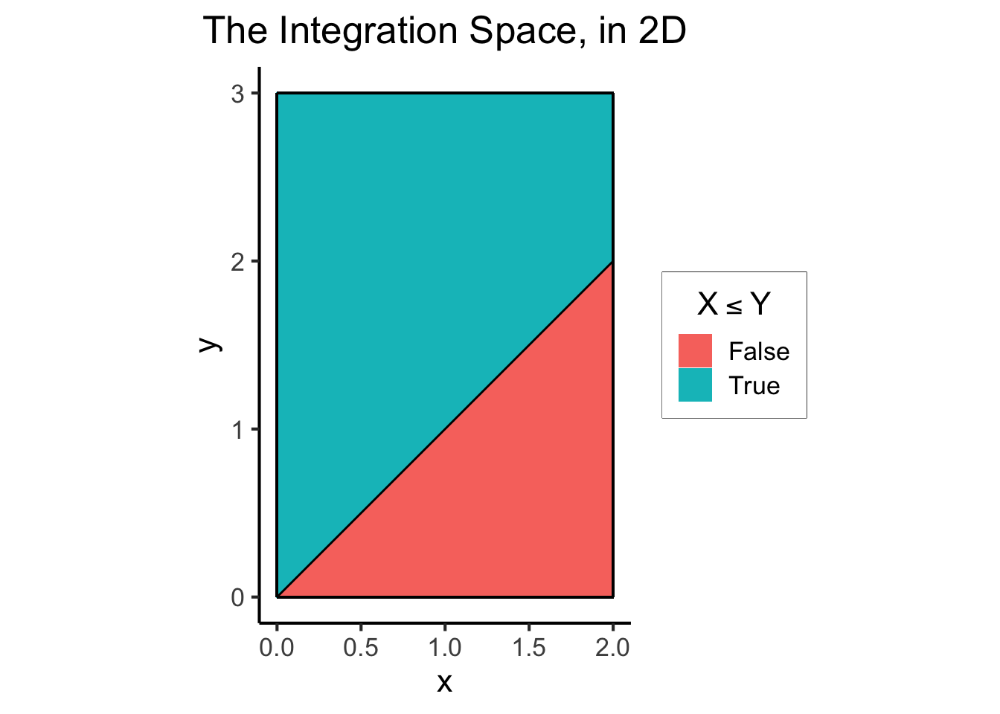
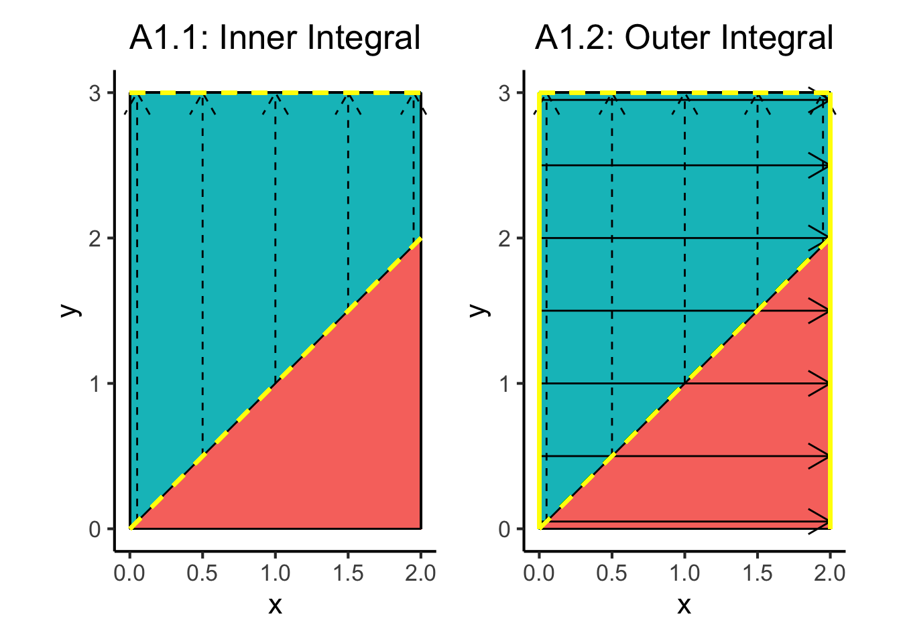
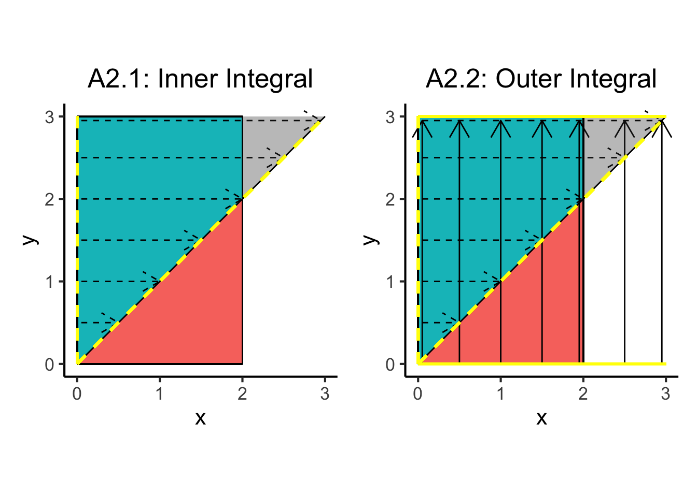
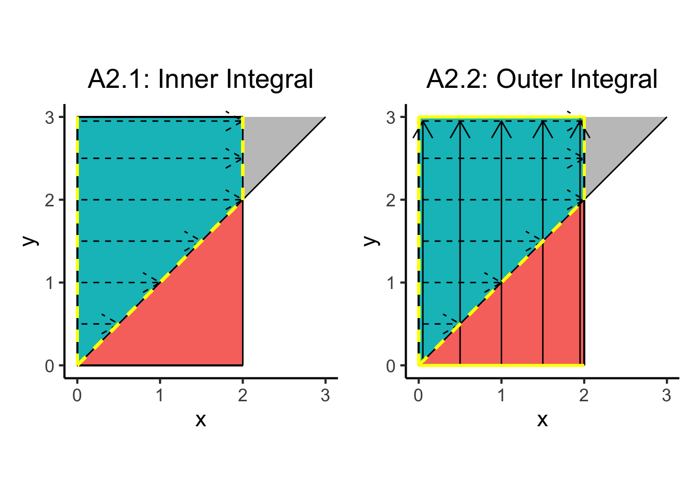
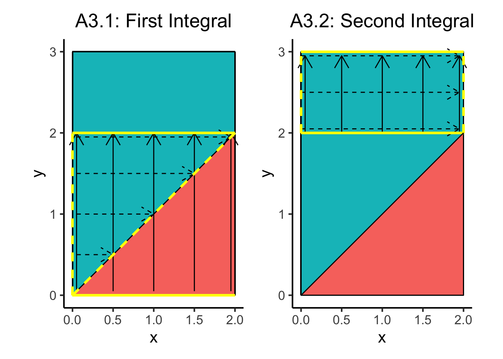

Code
source("../../dsan-globals/_globals.r")source("../../dsan-globals/_globals.r")Problem 2e on your Lab 5 Assignment, which asks you to:
Find the probability \(\Pr(X \leq Y)\)
is trickier than most of the other parts/problems, in the sense that it really requires us to think carefully about what exactly we’re doing when we take integrals to obtain probabilities from probability density functions. So, in this writeup, I want to walk through that problem step-by-step, showing where the “trickiness” enters into the problem.
In this part I’m going to show how, if we ignore some of the details of the problem, we might think of the two following ways to go about obtaining the answer, which on the surface seem like equally “good” ways to go about it:
Using the joint pdf \(f_{X,Y}(x,y)\) that we obtained in earlier parts of the problem,
\[ f_{X,Y}(x,y) = 3C(x^2 + 2xy^2) = \frac{1}{44}(x^2 + 2xy^2), \]
carrying out the math for Approach 1 gives us the following result (skipping many many steps):
\[ \begin{align*} \Pr(X \leq Y) &= \int_{0}^{2}\int_{x}^{3}f_{X,Y}(x,y)~dy~dx \\ &= \frac{1}{132} \int_0^2 (9x^2 + 54x - 3x^3 - 2x^4)~dx \\ &= \frac{1}{132}\cdot \frac{536}{5} \approx 0.812~✅ \end{align*} \]
So far, we can at least be a bit assured by the fact that we’ve obtained a value between 0 and 1, hence a valid probability value1.
Carrying out the math for Approach 2 in the same way, however, gives us something strange:
\[ \begin{align*} \Pr(X \leq Y) &= \int_{0}^{3}\int_{0}^{y}f_{X,Y}(x,y)~dx~dy \\ &= \frac{1}{132}\int_{0}^{3} y^3 + 3y^4 \\ &= \frac{1}{132}\cdot \frac{3321}{20} \approx 1.258~😳 \end{align*} \]
So what happened?
There are a lot of ways we could stop and try to diagnose what’s going on here, but the approach that helped me most in thinking through this problem was to plot out the space over which we’re integrating the joint pdf, geometrically:
Here I create what is sometimes called a “mesh grid”, by running the expand_grid() function (from tidyverse, which replaces the base-R expand.grid() function you have already seen, but isn’t very different) to create a grid of points, where these points’ \(x\) values are drawn from x and their \(y\) values are drawn from y:
library(tidyverse)
x <- seq(from = 0, to = 2, by = 0.01)
y <- seq(from = 0, to = 3, by = 0.01)
xy_df <- expand_grid(x, y)
# Display the first and last 6 rows
xy_df |> head(); xy_df |> tail()| x | y |
|---|---|
| 0 | 0.00 |
| 0 | 0.01 |
| 0 | 0.02 |
| 0 | 0.03 |
| 0 | 0.04 |
| 0 | 0.05 |
| x | y |
|---|---|
| 2 | 2.95 |
| 2 | 2.96 |
| 2 | 2.97 |
| 2 | 2.98 |
| 2 | 2.99 |
| 2 | 3.00 |
Next I use the mutate() function to create a new variable, x_leq_y, on the basis of this grid, and look at the count of the number of points in my grid which do and do not satisfy the boolean expression x <= y:
xy_df <- xy_df |> mutate(
x_leq_y = as.numeric(x <= y)
)
xy_df |> group_by(x_leq_y) |> count(.drop=FALSE)| x_leq_y | n |
|---|---|
| 0 | 20100 |
| 1 | 40401 |
Finally, I use ggplot with the geom_tile() geometry to create a simple but helpful visualization of the subset of \([0,2] \times [0,3]\) within which the boolean condition is true (and where I have explicitly drawn lines showing the boundaries within which the point \((x,y)\) has a non-zero probability density, as well as the function \(f(x) = x\), which will both come in handy later):
library(latex2exp)
ggplot(xy_df, aes(x=x, y=y)) +
geom_tile(aes(fill=factor(x_leq_y))) +
geom_segment(x=0, y=0, xend=0, yend=3) +
geom_segment(x=0, y=0, xend=2, yend=0) +
geom_segment(x=0, y=3, xend=2, yend=3) +
geom_segment(x=2, y=0, xend=2, yend=3) +
stat_function(fun = function(x) x) +
coord_fixed() +
dsan_theme() +
labs(
fill = TeX("$X \\leq Y$"),
title = "The Integration Space, in 2D"
) +
scale_fill_discrete(labels=c("False","True"))
And now let’s use this plot to think about what we’re doing in both Approach 1 and Approach 2.
To think through the double integral in this case, visually, I like to imagine “sweeping” over the space across one dimension when computing the inner integral, then “sweeping” over the space across the other dimension when computing the outer integral.
Remember that the double integral in Approach 1 was set up as follows:
\[ \begin{align*} \Pr(X \leq Y) &= \int_{0}^{2}\int_{x}^{3}f_{X,Y}(x,y)~dy~dx \end{align*} \]
So, in this case, we can add some arrows to our plot to show the “sweeping” which is occurring when we compute the inner integral. Since the inner integral is from \(y = x\) to \(y = 3\), I think of arrows sweeping upwards from the line \(y = x\) to the (horizontal) line \(y = 3\).
So, to make the diagram on the left side of the figure below, which represents the inner integral, I use:
Then to make the diagram on the right, which represents the outer integral, I use:
Which means that ultimately, after computing the two integrals, we have integrated over the region of the \(xy\)-plane bounded by the dashed and solid yellow lines.
library(patchwork)
library(latex2exp)
# blw = Boundary line width
blw <- 1
# blc = Boundary line color
blc <- 'yellow'
a1_inner_xvals <- c(0.05, 0.5, 1, 1.5, 1.95)
a1_inner_df <- tibble(x=a1_inner_xvals)
a1_inner_df <- a1_inner_df |> mutate(
xend = x,
y = x,
yend = 3
)
a1_inner_plot <- ggplot(xy_df, aes(x=x, y=y)) +
geom_tile(aes(fill=factor(x_leq_y))) +
geom_segment(x=0, y=0, xend=0, yend=3) +
geom_segment(x=0, y=0, xend=2, yend=0) +
geom_segment(x=0, y=3, xend=2, yend=3) +
geom_segment(x=2, y=0, xend=2, yend=3) +
stat_function(fun = function(x) x) +
geom_segment(data=a1_inner_df, aes(x=x, y=y, xend=xend, yend=yend), linetype='dashed', arrow = arrow(length = unit(0.5, "cm"))) +
# Inner integral, lower bound
geom_segment(x=0, y=0, xend=2, yend=2, color=blc, linewidth=blw, linetype='dashed') +
# Inner integral, upper bound
geom_segment(x=0, y=3, xend=2, yend=3, color=blc, linewidth=blw, linetype='dashed') +
coord_fixed() +
dsan_theme() +
labs(
title = "A1.1: Inner Integral"
) +
remove_legend()
a1_outer_yvals <- c(0.05, 0.5, 1, 1.5, 2, 2.5, 2.95)
a1_outer_df <- tibble(y=a1_outer_yvals)
a1_outer_df <- a1_outer_df |> mutate(
yend = y,
x = 0,
xend = 2
)
a1_outer_plot <- ggplot(xy_df, aes(x=x, y=y)) +
geom_tile(aes(fill=factor(x_leq_y))) +
geom_segment(data=a1_inner_df, aes(x=x, y=y, xend=xend, yend=yend), linetype='dashed', arrow = arrow(length = unit(0.5, "cm"))) +
geom_segment(data=a1_outer_df, aes(x=x, y=y, xend=xend, yend=yend), linetype='solid', arrow = arrow(length = unit(0.5, "cm"))) +
geom_segment(x=0, y=0, xend=0, yend=3) +
geom_segment(x=0, y=0, xend=2, yend=0) +
geom_segment(x=0, y=3, xend=2, yend=3) +
geom_segment(x=2, y=0, xend=2, yend=3) +
stat_function(fun = function(x) x) +
# Inner integral, lower bound
geom_segment(x=0, y=0, xend=2, yend=2, color=blc, linewidth=blw, linetype='dashed') +
# Inner integral, upper bound
geom_segment(x=0, y=3, xend=2, yend=3, color=blc, linewidth=blw, linetype='dashed') +
# Outer integral, lower bound
geom_segment(x=0, y=0, xend=0, yend=3, color=blc, linewidth=blw, linetype='solid') +
# Outer integral, upper bound
geom_segment(x=2, y=0, xend=2, yend=3, color=blc, linewidth=blw, linetype='solid') +
coord_fixed() +
dsan_theme() +
labs(
title = "A1.2: Outer Integral"
) +
remove_legend()
a1_inner_plot + a1_outer_plot
Note how, since the inner integral in this case already excluded all points lying beneath the line \(y = x\) (the dashed yellow diagonal line), it actually didn’t matter that our outer integral went over this “boundary line”: the overall result of the double-integration only sums up the values of the pdf in the range bounded by the yellow lines. In other words, even though the outer integral does “sweep” over the dashed yellow diagonal \(y = x\) line, thus sweeping outside of the range of valid values of \(x\), it did not have any density here to sum up, since all of the probability density in this red triangle had been left out of the inner integral.
(If that last paragraph didn’t make sense to you, don’t worry about it! Just stick to the pictures for intuition)
On the other hand, recall that the double integral in Approach 2 was set up as follows:
\[ \begin{align*} \Pr(X \leq Y) &= \int_{0}^{3}\int_{0}^{y}f_{X,Y}(x,y)~dx~dy \end{align*} \]
Given this double integral setup, we can employ this same way of thinking about integration (as “sweeping” across a dimension) to obtain the following diagram, which helps illustrate why we obtain a value greater than 1 in this case:
a2_inner_yvals <- c(0.5, 1, 1.5, 2, 2.5, 2.95)
a2_inner_df <- tibble(y=a2_inner_yvals)
a2_inner_df <- a2_inner_df |> mutate(
yend = y,
x = 0.05,
xend = y
)
ribbon_xvals <- seq(from = 2, to = 3, by = 0.01)
ribbon_df <- tibble(x=ribbon_xvals, y=ribbon_xvals)
a2_inner_plot <- ggplot(xy_df, aes(x=x, y=y)) +
geom_tile(aes(fill=factor(x_leq_y))) +
geom_segment(data=a2_inner_df, aes(x=x, y=y, xend=xend, yend=yend), linetype='dashed', arrow = arrow(length = unit(0.5, "cm"))) +
geom_ribbon(data=ribbon_df, aes(x=x, ymin=y, ymax=3), alpha=0.333) +
geom_segment(x=0, y=0, xend=0, yend=3) +
geom_segment(x=0, y=0, xend=2, yend=0) +
geom_segment(x=0, y=3, xend=2, yend=3) +
geom_segment(x=2, y=0, xend=2, yend=3) +
stat_function(fun=function(x) x) +
# Inner integral, lower bound
geom_segment(x=0, y=0, xend=0, yend=3, color=blc, linewidth=blw, linetype='dashed') +
# Inner integral, upper bound
geom_segment(x=0, y=0, xend=3, yend=3, color=blc, linewidth=blw, linetype='dashed') +
coord_fixed() +
dsan_theme() +
labs(
title = "A2.1: Inner Integral"
) +
remove_legend()
a2_outer_xvals <- c(0.05, 0.5, 1, 1.5, 1.95, 2.5, 2.95)
a2_outer_df <- tibble(x=a2_outer_xvals)
a2_outer_df <- a2_outer_df |> mutate(
xend = x,
y = 0,
yend = 2.95
)
a2_outer_plot <- ggplot(xy_df, aes(x=x, y=y)) +
geom_tile(aes(fill=factor(x_leq_y))) +
geom_segment(data=a2_inner_df, aes(x=x, y=y, xend=xend, yend=yend), linetype='dashed', arrow = arrow(length = unit(0.5, "cm"))) +
geom_segment(data=a2_outer_df, aes(x=x, y=y, xend=xend, yend=yend), linetype='solid', arrow = arrow(length = unit(0.5, "cm"))) +
geom_ribbon(data=ribbon_df, aes(x=x, ymin=y, ymax=3), alpha=0.333) +
geom_segment(x=0, y=0, xend=0, yend=3) +
geom_segment(x=0, y=0, xend=2, yend=0) +
geom_segment(x=0, y=3, xend=2, yend=3) +
geom_segment(x=2, y=0, xend=2, yend=3) +
stat_function(fun=function(x) x) +
# Inner integral, lower bound
geom_segment(x=0, y=0, xend=0, yend=3, color=blc, linewidth=blw, linetype='dashed') +
# Inner integral, upper bound
geom_segment(x=0, y=0, xend=3, yend=3, color=blc, linewidth=blw, linetype='dashed') +
# Outer integral, lower bound
geom_segment(x=0, y=0, xend=3, yend=0, color=blc, linewidth=blw, linetype='solid') +
# Outer integral, upper bound
geom_segment(x=0, y=3, xend=3, yend=3, color=blc, linewidth=blw, linetype='solid') +
coord_fixed() +
dsan_theme() +
labs(
title = "A2.2: Outer Integral"
) +
remove_legend()
a2_inner_plot + a2_outer_plot
So we see that, whereas in Approach 1 everything worked out since the line \(y = x\) was suitable as a mathematical representation of the entire lower bound of \(y\), here in Approach 2 we cannot use the line \(y = x\) on its own to characterize the upper bound on \(x\), since this will include the grey triangle in the diagram above as part of the region over which we’re integrating the joint pdf.
Thinking through the above statement a bit further: if we want to “integrate out” the \(x\) variable, the upper bound on \(x\) should instead be \(\min(2, y)\). In other words, by looking at the above diagram, we can see that the following modification to our integral in Approach 2 would technically “work” to fix the problem, if it was easy to compute:
\[ \begin{align*} \Pr(X \leq Y) &= \int_{0}^{3}\int_{0}^{\min(2, y)}f_{X,Y}(x,y)~dx~dy \end{align*} \]
One way of thinking about this is, if we had set our upper bounds in Approach 2 this way, the diagram showing the “sweeping” over the \(x\) dimension would instead look like the following, where the yellow line traces out \(x = \min(2,y)\) instead of \(x = y\) (the black line):
a2_inner_df_fixed <- a2_inner_df |> mutate(
xend = ifelse(xend >= 2, 2, xend)
)
a2_fixed_inner_plot <- ggplot(xy_df, aes(x=x, y=y)) +
geom_tile(aes(fill=factor(x_leq_y))) +
geom_segment(data=a2_inner_df_fixed, aes(x=x, y=y, xend=xend, yend=yend), linetype='dashed', arrow = arrow(length = unit(0.5, "cm"))) +
geom_ribbon(data=ribbon_df, aes(x=x, ymin=y, ymax=3), alpha=0.333) +
geom_segment(x=0, y=0, xend=0, yend=3) +
geom_segment(x=0, y=0, xend=2, yend=0) +
geom_segment(x=0, y=3, xend=2, yend=3) +
geom_segment(x=2, y=0, xend=2, yend=3) +
stat_function(fun=function(x) x) +
# Inner integral, lower bound
geom_segment(x=0, y=0, xend=0, yend=3, color=blc, linewidth=blw, linetype='dashed') +
# Inner integral, upper bound, segment 1
geom_segment(x=2, y=2, xend=2, yend=3, color=blc, linewidth=blw, linetype='dashed') +
# Inner integral, upper bound, segment 2
geom_segment(x=0, y=0, xend=2, yend=2, color=blc, linewidth=blw, linetype='dashed') +
coord_fixed() +
dsan_theme() +
labs(
title = "A2.1: Inner Integral"
) +
remove_legend()
a2_outer_df_fixed <- a2_outer_df |> filter(x <= 2)
a2_fixed_outer_plot <- ggplot(xy_df, aes(x=x, y=y)) +
geom_tile(aes(fill=factor(x_leq_y))) +
geom_segment(data=a2_inner_df_fixed, aes(x=x, y=y, xend=xend, yend=yend), linetype='dashed', arrow = arrow(length = unit(0.5, "cm"))) +
geom_segment(data=a2_outer_df_fixed, aes(x=x, y=y, xend=xend, yend=yend), linetype='solid', arrow = arrow(length = unit(0.5, "cm"))) +
geom_ribbon(data=ribbon_df, aes(x=x, ymin=y, ymax=3), alpha=0.333) +
geom_segment(x=0, y=0, xend=0, yend=3) +
geom_segment(x=0, y=0, xend=2, yend=0) +
geom_segment(x=0, y=3, xend=2, yend=3) +
geom_segment(x=2, y=0, xend=2, yend=3) +
stat_function(fun=function(x) x) +
# Inner integral, lower bound
geom_segment(x=0, y=0, xend=0, yend=3, color=blc, linewidth=blw, linetype='dashed') +
# Inner integral, upper bound, segment 1
geom_segment(x=2, y=2, xend=2, yend=3, color=blc, linewidth=blw, linetype='dashed') +
# Inner integral, upper bound, segment 2
geom_segment(x=0, y=0, xend=2, yend=2, color=blc, linewidth=blw, linetype='dashed') +
# Outer integral, lower bound
geom_segment(x=0, y=0, xend=2, yend=0, color=blc, linewidth=blw, linetype='solid') +
# Outer integral, upper bound
geom_segment(x=0, y=3, xend=2, yend=3, color=blc, linewidth=blw, linetype='solid') +
coord_fixed() +
dsan_theme() +
labs(
title = "A2.2: Outer Integral"
) +
remove_legend()
a2_fixed_inner_plot + a2_fixed_outer_plot
Since including fancy functions like \(\min()\) and/or \(\max()\) in our integral bounds makes things more complicated (to me, at least), one “quick fix” way to handle this would be to just take the result of the original Approach 2 integral and subtract out the integral of the joint pdf within the grey triangle in the above diagrams.
However, the more “correct” way in a sense would be to ensure that we are never integrating over an area that is not in the support of \((X,Y)\). To accomplish this, we can observe that our Approach 2 integral would have worked and would have integrated only over the support of \((X,Y)\) if we had broken it up as follows:
\[ \Pr(X \leq Y) = \int_{0}^{2}\int_{0}^{y}f_{X,Y}(x,y)~dx~dy + \int_{2}^{3}\int_{0}^{2}f_{X,Y}(x,y)~dx~dy \]
Thus we’ll call this way of integrating Approach 3, which can be visualized as follows:
a31_inner_yvals <- c(0.5, 1, 1.5, 1.95)
a31_inner_df <- tibble(y=a31_inner_yvals)
a31_inner_df <- a31_inner_df |> mutate(
yend = y,
x = 0.05,
xend = y
)
a31_outer_xvals <- c(0.05, 0.5, 1, 1.5, 1.95)
a31_outer_df <- tibble(x=a31_outer_xvals)
a31_outer_df <- a31_outer_df |> mutate(
xend = x,
y = 0.05,
yend = 2
)
a31_plot <- ggplot(xy_df, aes(x=x, y=y)) +
geom_tile(aes(fill=factor(x_leq_y))) +
geom_segment(data=a31_inner_df, aes(x=x, y=y, xend=xend, yend=yend), linetype='dashed', arrow = arrow(length = unit(0.5, "cm"))) +
geom_segment(data=a31_outer_df, aes(x=x, y=y, xend=xend, yend=yend), linetype='solid', arrow = arrow(length = unit(0.5, "cm"))) +
geom_segment(x=0, y=0, xend=0, yend=3) +
geom_segment(x=0, y=0, xend=2, yend=0) +
geom_segment(x=0, y=3, xend=2, yend=3) +
geom_segment(x=2, y=0, xend=2, yend=3) +
stat_function(fun=function(x) x) +
# Lower bound, inner integral
geom_segment(x=0, y=0, xend=0, yend=2, color="yellow", linewidth=1, linetype='dashed') +
# Upper bound, inner integral
geom_segment(x=0, y=0, xend=2, yend=2, color="yellow", linewidth=1, linetype='dashed') +
# Lower bound, outer integral
geom_segment(x=0, y=0, xend=2, yend=0, color="yellow", linewidth=1, linetype='solid') +
geom_segment(x=0, y=2, xend=2, yend=2, color="yellow", linewidth=1, linetype='solid') +
coord_fixed() +
dsan_theme() +
labs(
title = "A3.1: First Integral"
) +
remove_legend()
a32_inner_yvals <- c(2.05, 2.5, 2.95)
a32_inner_df <- tibble(y=a32_inner_yvals)
a32_inner_df <- a32_inner_df |> mutate(
yend = y,
x = 0,
xend = 1.95
)
a32_outer_xvals <- c(0.05, 0.5, 1, 1.5, 1.95)
a32_outer_df <- tibble(x=a32_outer_xvals)
a32_outer_df <- a32_outer_df |> mutate(
xend = x,
y = 2,
yend = 2.95
)
a32_plot <- ggplot(xy_df, aes(x=x, y=y)) +
geom_tile(aes(fill=factor(x_leq_y))) +
geom_segment(data=a32_inner_df, aes(x=x, y=y, xend=xend, yend=yend), linetype='dashed', arrow = arrow(length = unit(0.5, "cm"))) +
geom_segment(data=a32_outer_df, aes(x=x, y=y, xend=xend, yend=yend), linetype='solid', arrow = arrow(length = unit(0.5, "cm"))) +
geom_segment(x=0, y=0, xend=0, yend=3) +
geom_segment(x=0, y=0, xend=2, yend=0) +
geom_segment(x=0, y=3, xend=2, yend=3) +
geom_segment(x=2, y=0, xend=2, yend=3) +
# Lower bound of inner integral
geom_segment(x=0, y=2, xend=0, yend=3, color="yellow", linewidth=1, linetype='dashed') +
geom_segment(x=2, y=2, xend=2, yend=3, color="yellow", linewidth=1, linetype='dashed') +
geom_segment(x=0, y=3, xend=2, yend=3, color="yellow", linewidth=1, linetype='solid') +
geom_segment(x=0, y=2, xend=2, yend=2, color='yellow', linewidth=1, linetype='solid') +
stat_function(fun=function(x) x) +
coord_fixed() +
dsan_theme() +
labs(
title = "A3.2: Second Integral"
) +
remove_legend()
a31_plot + a32_plot
So we see that the following steps give us the correct result:
Mathematically, this gives us (skipping many steps like we did before):
\[ \begin{align*} \Pr(X \leq Y) &= \int_{0}^{2}\int_{0}^{y}f_{X,Y}(x,y)~dx~dy + \int_{2}^{3}\int_{0}^{2}f_{X,Y}(x,y)~dx~dy \\ &= \frac{29}{165} + \frac{7}{11} = \frac{134}{165} \approx 0.812, \end{align*} \]
matching the result from our original integral, performed in the opposite order.
Hopefully this way of breaking down the relationship between integration and probability can help you out: if you find yourself staring at a problem for too long, try breaking your brain out of the rut by seeing if diagrams like the above can help you reason through what the bounds of your integrals should be 😎
Note that this does not mean we are necessarily correct! It just means that our result doesn’t “break” any laws of probability.↩︎